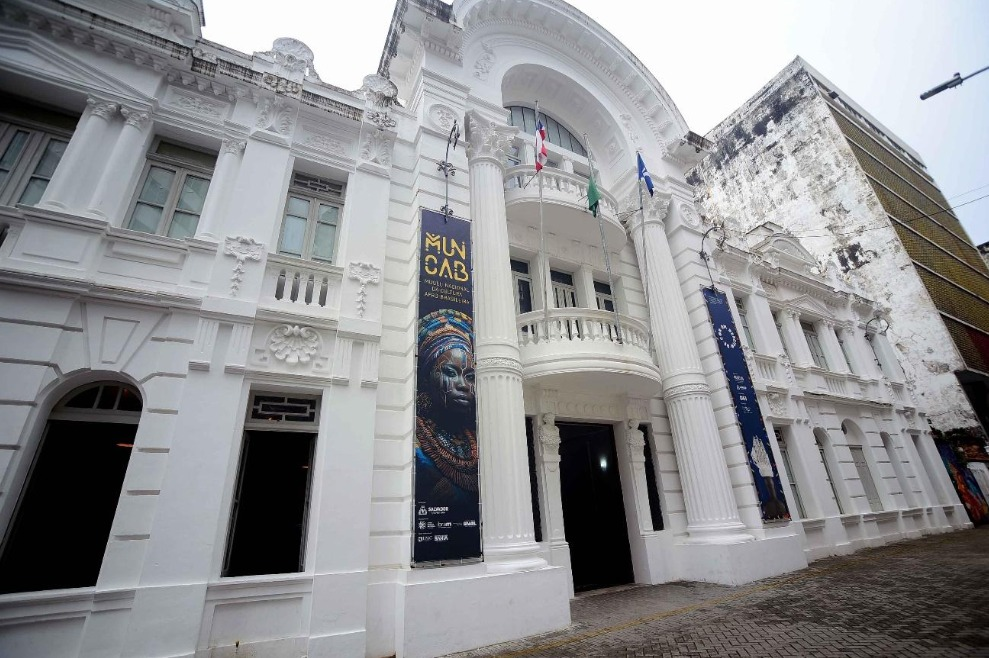

Roots Guide
Pontos Historicos

Museu de Percurso do Negro
Primeiro museu de percurso do Brasil. Obras a céu aberto marcam a presença negra na formação de POA. Representa luta contra apagamento da memória negra no Sul. Curiosidades: Não tem paredes. Obra "Tambor" no Largo Zumbi dos Palmares é a mais famosa. Tem mapa online com trajeto completo pra visitação autoguiada. Endereço: Largo Zumbi dos Palmares - Cidade Baixa, Porto Alegre - RS, 90050-030 Valor de entrada: Gratuito. Espaço público. Link do Maps: link